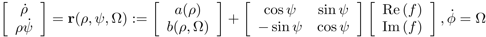
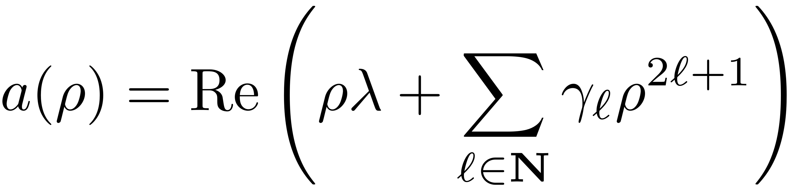
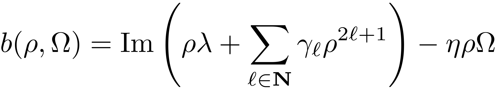
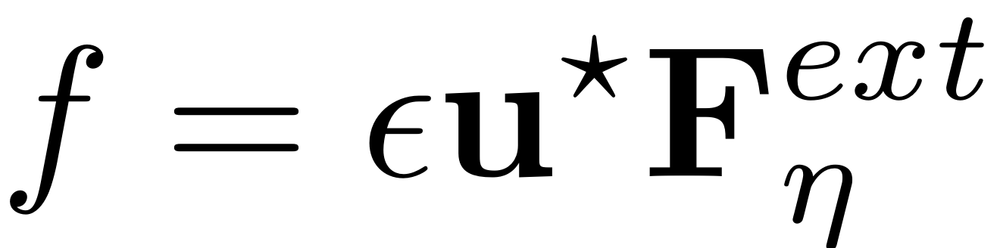
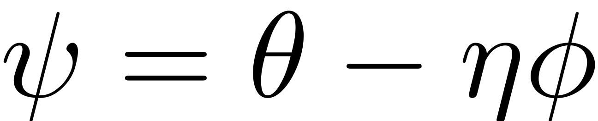

COMPUTE_REDUCED_DYNAMICS_2D_POLAR
function [rhodot, rhopsidot, kappa] = compute_reduced_dynamics_2D_polar(RHO,PSI, lambda, gamma, R_1,Omega,epsilon)
This functions computed the reduced dynamics on 2D-manifolds over a polar grid (RHO,PSI). The equations are as follows:

where




[rhodot, rhopsidot, kappa] = compute_reduced_dynamics_2D_polar(RHO,PSI, lambda, gamma, R_1,Omega,epsilon)
- RHO: meshgrid of polar radius parametrisation coordinates
- PSI: meshgrid of polar angle/phase parametrisation coordinates
- lambda: master mode eigenvalues
- gamma: autonomous reduced dynamics coefficients
- R_1: non-autonomous reduced dynamics coefficients
- Omega: frequency at which system is driven and at which RD responds
- epsilon: forcing amplitude
- rhodot: polar ODE for reduced dynamics evaluated at RHO and PSI, amplitude equation
- rhopsidot:polar ODE for reduced dynamics evaluated at RHO and PSI, phase equation
- kappa: leading harmonic in reduced dynamics
See also: FRC_LEVEL_SET, FRC_AB
R_10 = nonzeros(R_1(1).R(1).coeffs); f = epsilon*R_10; kappa = R_1(1).kappa; % forcing harmonic present in the normal form if kappa < 0 % ensure the positive multiple kappa = -kappa; f = conj(f); end kappa0 = kappa; % fprintf(' %d times the forcing frequency %.4d is nearly resonant with the eigenvalue %.4d + i%.4d \n', eta, Omega, real(lambda),imag(lambda)) % Autonomous components of the reduced dynamics [a,b] = frc_ab(RHO, kappa*Omega, gamma, lambda); % Reduced dynamics if isempty(f) rhodot = a; rhopsidot = b; else rhodot = a + cos(PSI) * real(f) + sin(PSI) * imag(f); rhopsidot = b + (cos(PSI) * imag(f) - sin(PSI) * real(f)); end %Higher order terms [rhodot,rhopsidot] = frc_drdt(epsilon,rhodot,rhopsidot,R_1, RHO, PSI,kappa0);
end
function [rhodot,rhopsidot] = frc_drdt(epsilon,rhodot,rhopsidot,R_1, RHO, PSI,kappa0) % Gets non-autonomous parts of the time derivatives % assumes reduced dynamics as (rhodot,rhopsidot) num_kappa = numel(R_1); for i = 1:num_kappa kappa = R_1(i).kappa/kappa0; cos_k = cos(kappa*PSI); sin_k = sin(kappa*PSI); for k = 1:(numel(R_1(i).R)-1) Rk = R_1(i).R(k+1); [~,col,r] = find(Rk.coeffs(1,:)); ind_abs = sum(Rk.ind(col,:),2); %exponent of spatial component run_idx = 1; for col_j = col rj = r(run_idx); % reduced dynamics coefficient in column col_j rhodot = rhodot + epsilon*RHO.^ind_abs(run_idx).*... ( real(rj)* cos_k + imag(rj)*sin_k ); rhopsidot = rhopsidot + epsilon*RHO.^ind_abs(run_idx).*... ( imag(rj)*cos_k - real(rj)*sin_k ); run_idx = run_idx+1; end end end end